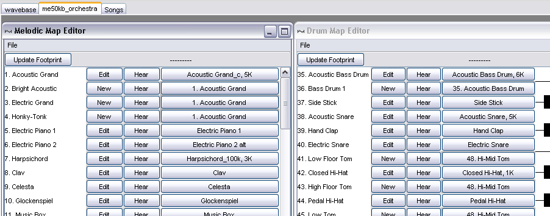

|
Mobileer Instrument Editor
CONFIDENTIAL and PROPRIETARY - © 2002-6 Mobileer Inc.
|
Using the Orchestra Editor
An Orchestra contains a collection of Instruments that are drawn from a shared InstrumentPool. If you were creating sounds for a game title then you would make a separate Orchestra for each title or perhaps for each level.
To select the Orchestra Editor, click on the second tab.

The Orchestra Editor contains two sub windows: "Program Map Editor" for the 128 melody instruments, and "Drum Map Editor" for the rhythm channel instruments. These are used to audition an instrument, to edit an instrument, and also to alias one instrument to another.
- Click on the "Hear" button to hear what the instrument sounds like.
- In the Drum Editor, you can enter a pitch that will be used when the drum is triggered.
- Click on the "Edit" button to open a voice editor.
- If an Program is aliased to another Program then you can click "New" button to create a custom Instrument for that Program.
- Click on "Update Footprint" to see the amount of wavetable and instrument memory used by the ProgramMap.
| Top | Previous | Next |